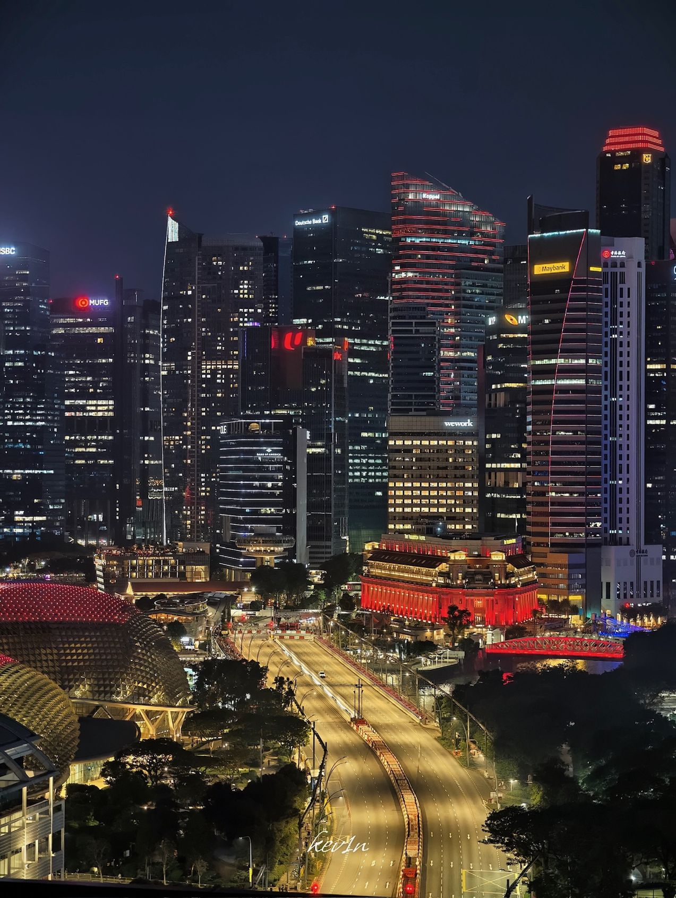
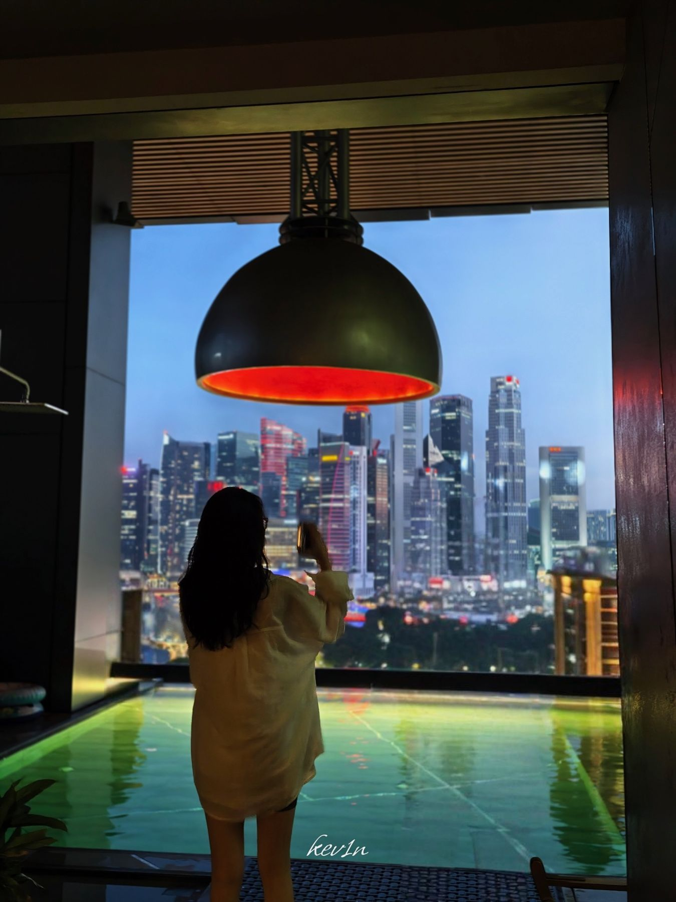
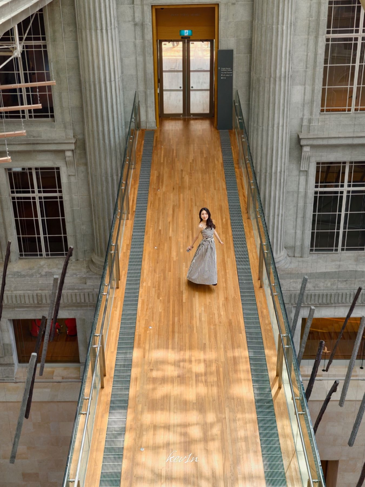
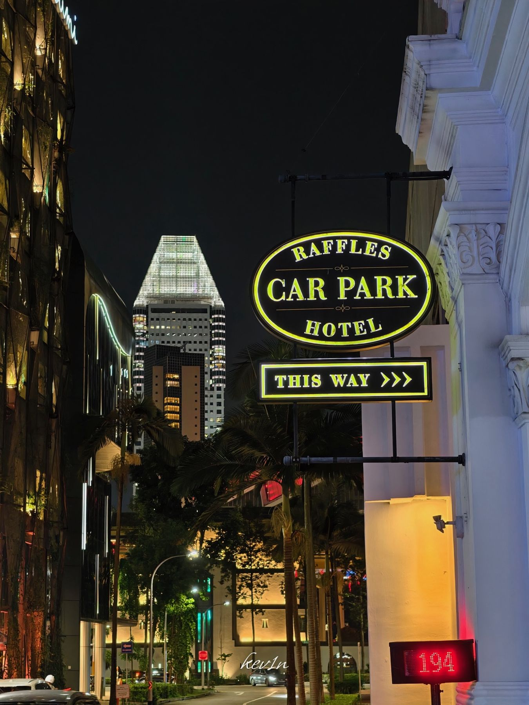
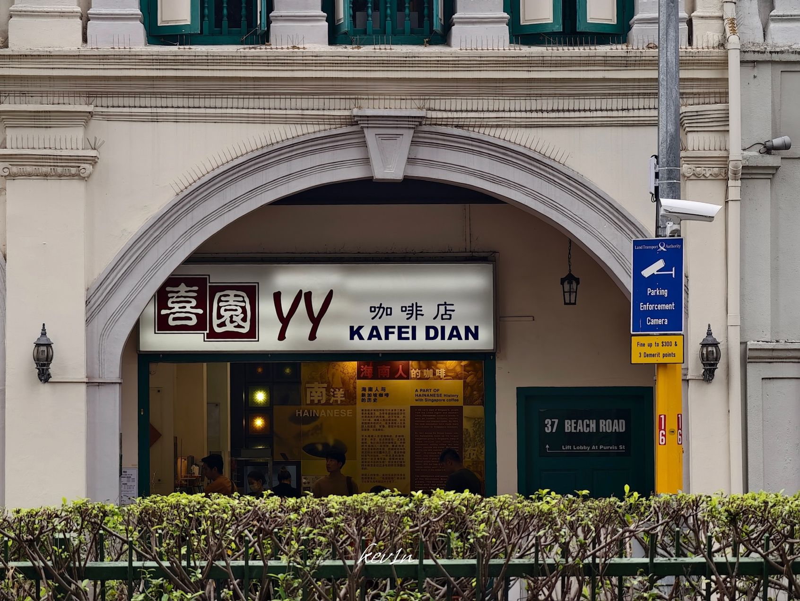
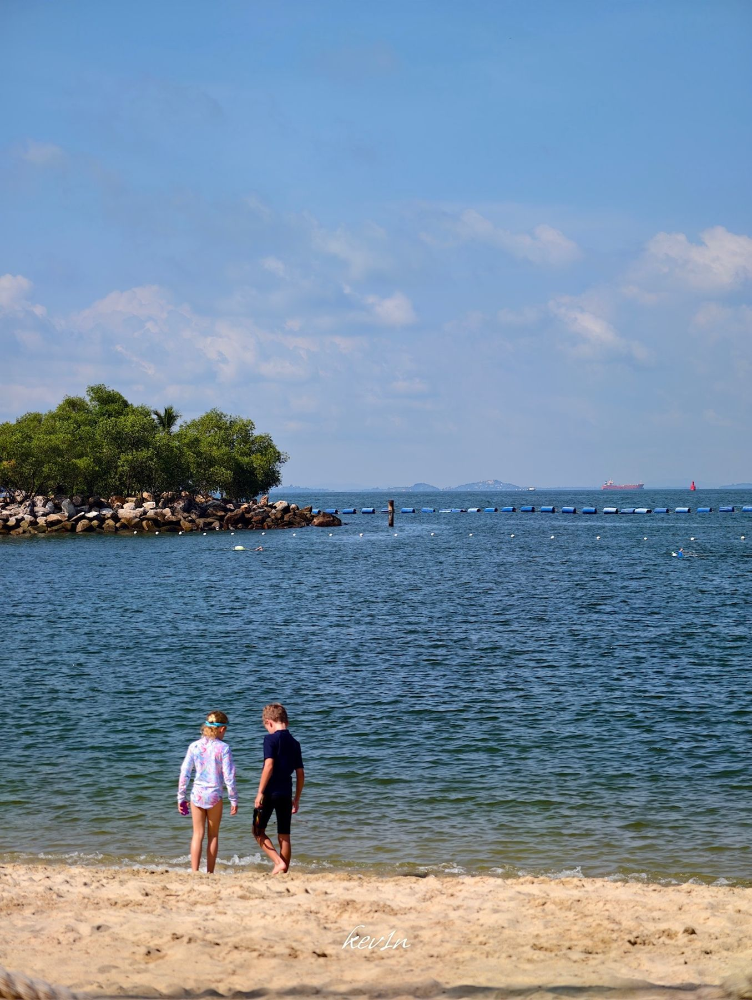
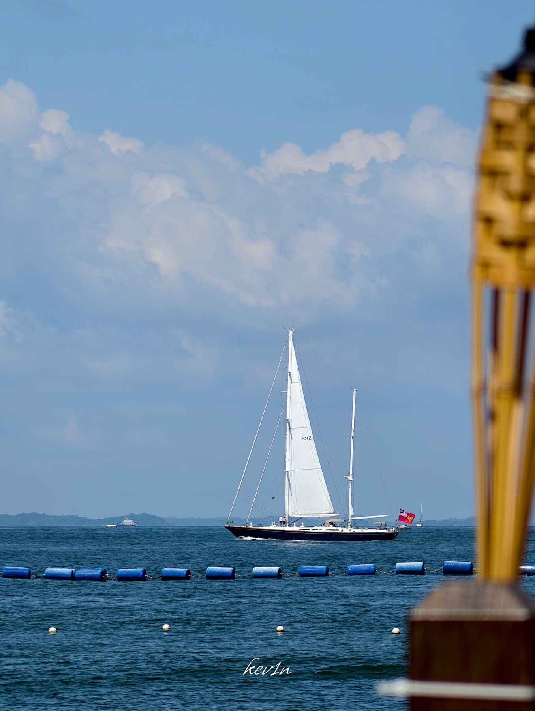
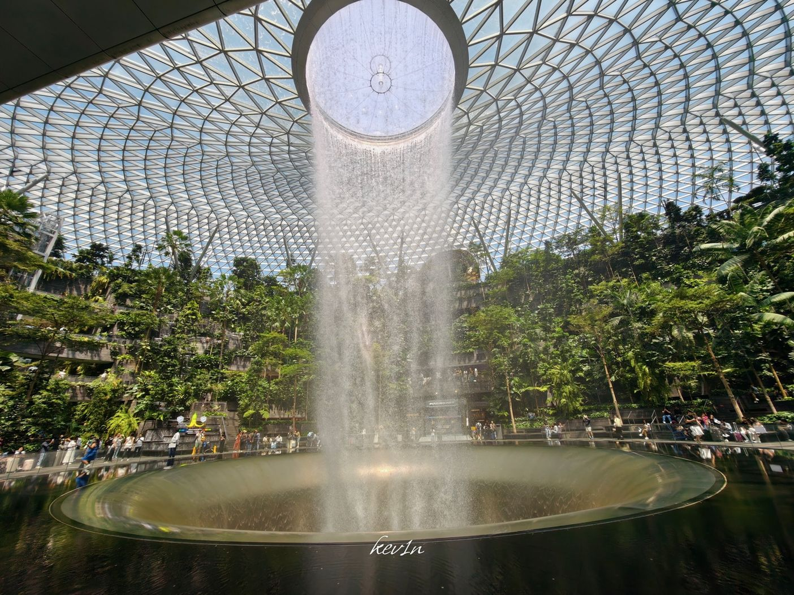

回忆录
回忆录
2023 到 2026，新加坡、日本、澳大利亚与英国。选一种心情，剪开一段回忆。

新加坡 · 2025 / 1 
新加坡 · 2025 / 2 
新加坡 · 2025 / 3 
新加坡 · 2025 / 4 
新加坡 · 2025 / 5 
新加坡 · 2025 / 6 
新加坡 · 2025 / 7 
新加坡 · 2025 / 8 
日本 · 2023 / 9 
日本 · 2023 / 10 
日本 · 2023 / 11 
日本 · 2023 / 12 
日本 · 2023 / 13 
日本 · 2023 / 14 
日本 · 2023 / 15 
日本 · 2023 / 16 
澳大利亚 · 2026 / 17 
澳大利亚 · 2026 / 18 
澳大利亚 · 2026 / 19 
澳大利亚 · 2026 / 20 
澳大利亚 · 2026 / 21 
澳大利亚 · 2026 / 22 
澳大利亚 · 2026 / 23 
英国 · 2024 / 24 
英国 · 2024 / 25 
英国 · 2024 / 26 
英国 · 2024 / 27 
英国 · 2024 / 28 
英国 · 2024 / 29 
英国 · 2024 / 30


选一种心情，翻阅旅行影像
选择一张彩纸开始